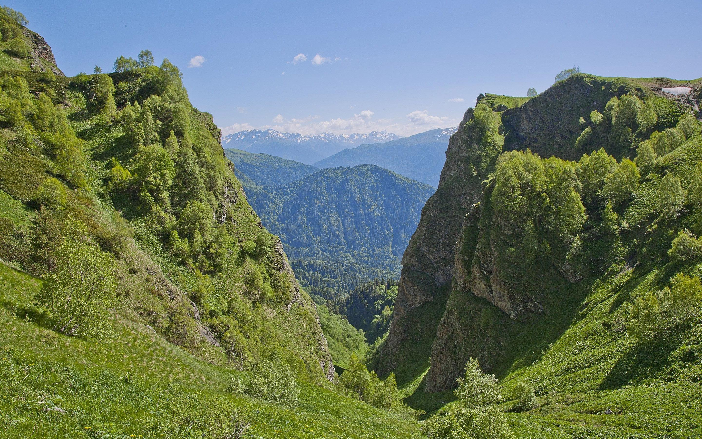
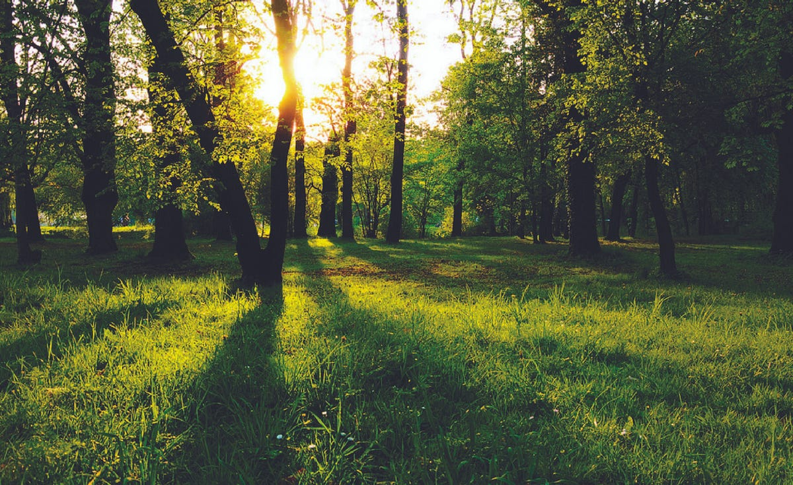
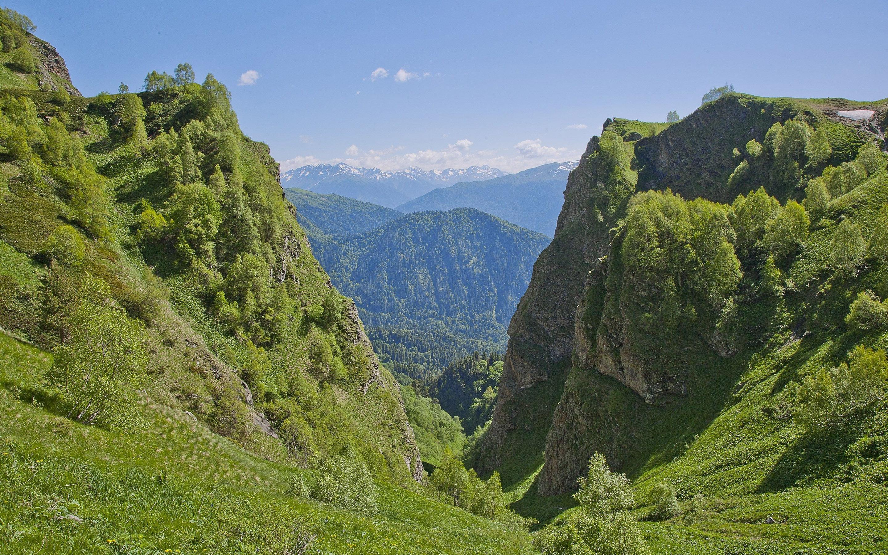
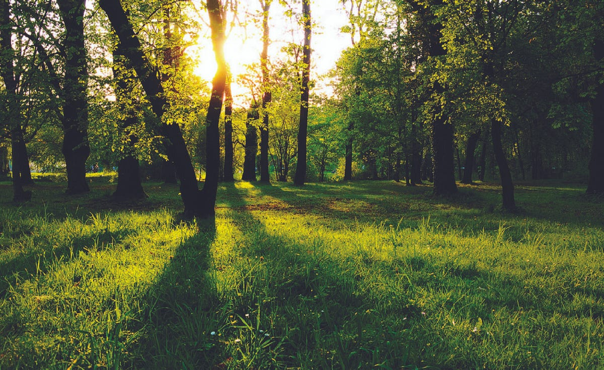

Welcome to My Animal & Nature Lover Portfolio
Hi there! I'm someone who finds joy in every paw print and feather. This site is a tribute to the incredible connection we share with animals — and a place where my love for design and furry (or feathery!) friends come together through creativity, stories, and snapshots of the animal world I adore.